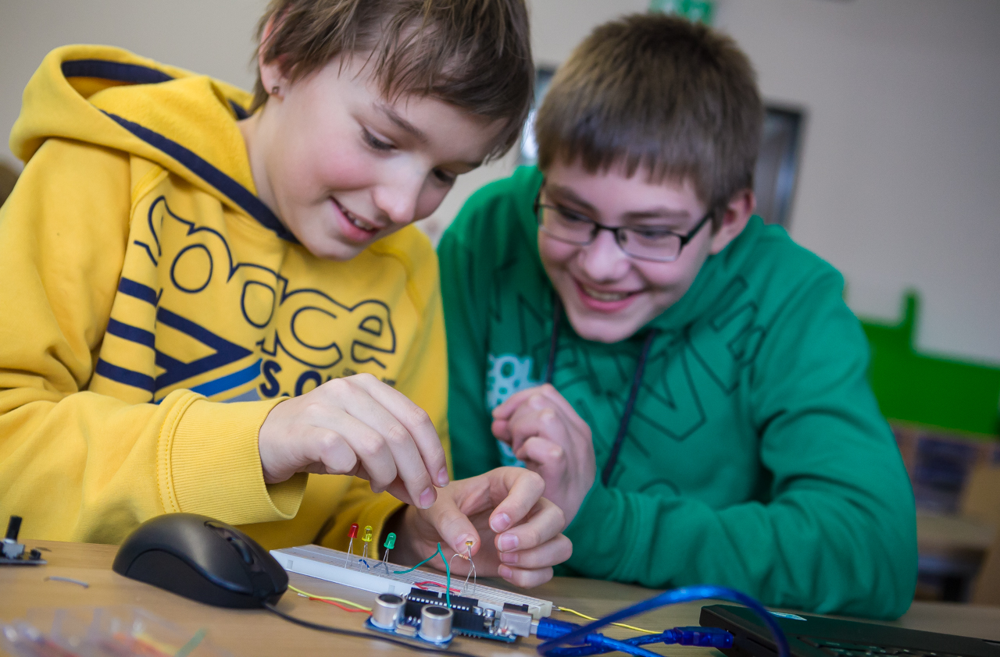
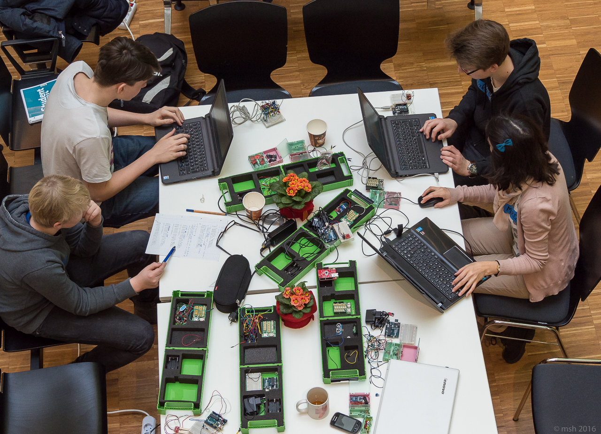

{% extends "_case-studies.html" %}
{% set case_id = 16 %}
{% block challenge %}
Mehr Schüler mit anschaulichen Beispielen und Experimenten für Technik und die Naturwissenschaften zu begeistern,
das ist ein ehrgeiziges Ziel. Der Forscherdrang von Schülern sollte nachhaltig gestärkt und gefördert werden, das
sieht auch das deutsche Bildungsministerium so. Aber Exkursionen, Projekte und Experimente müssen von Lehrern
besonders zeitintensiv vorbereitet werden, damit sie die Schüler begeistern und ihre Neugierde wecken. Das bedeutet
für die Lehrer oft einen enormen zusätzlichen Aufwand. Gleichzeitig sieht sich die Wissenschaft – insbesondere die
Umweltwissenschaften – mit einem steigenden Datenbedarf konfrontiert. Um Umweltphänomene besser erforschen zu
können, müssen mehr Daten erhoben werden.
{% endblock %}
{% block solution %}
Das GI@School Lab des Instituts für Geoinformatik der Universität Münster möchte gleichzeitig den wissenschaftlichen
Nachwuchs und die Generierung von Geodaten fördern. Deshalb stellt es Lehrern für ihren Unterricht ein umfangreiches
Angebot zur Förderung von Kompetenzen im Bereich “digitale Geoinformation” bereit. Außerdem sollen Bürger ermutigt
warden, Geodaten zu generieren und zu teilen, damit sie selbst die Möglichkeit haben, eigenen Forschungsfragen
nachzugehen. Dazu hat das Institut die senseBox erfunden. Das ist eine Sensorstation, die vom Nutzer selbst gebaut
wird und das Erheben von Umweltdaten und Geoinformationen ermöglicht. Es gibt zwei Versionen: die senseBox:home und
die senseBox:edu.

Erstere ist für die Nutzung zuhause gedacht, einfach aufzubauen und sofort einsatzbereit, um als lokale
Messstationen kontinuierlich Daten zu Luftfeuchte, Luftdruck, Helligkeit, UV-Strahlung etc. zu generieren. Mit ihrer
fertigen senseBox:home können Bürger so nicht nur Umweltdaten in ihrer Umgebung messen, sie können diese auch über
die sogenannte openSenseMap als offene Daten in ein Portal einspeisen und die dort vorhandenen Daten wiederum für
eigene Forschungsprojekte im Umweltbereich nutzen.
Die senseBox:edu wurde speziell für den Schulunterricht konzipiert, um anschaulich das Erlernen von Kompetenzen in
den Bereichen Programmierung, Elektronik und Umweltdatengenerierung zu fördern. Im Gegensatz zur senseBox:home ist
der Aufbau der senseBox:edu komplexer und Teil der Lernerfahrung. Auch hier können die generierten Daten in die
openSenseMap eingespeist und die deutschlandweit generierten Daten für eigene Forschungsfragen genutzt werden. Die
senseBox:edu basiert auf Arduino Mikrokontrollern und Sensoren und umfasst zusätzliches Zubehör und
Unterrichtsmaterial. Auf diese Weise werden Lehrer aktiv darin unterstützt, ihren Schülern Programmierkompetenzen
sowie Fähigkeiten zur Generierung und Nutzung von Geoinformationsdaten zu vermitteln.
{% endblock %}
{% block datasets %}
 Die senseBox wurde nach den Prinzipien der Open Science entwickelt und so ist die Zusammenstellung der
senseBox-Komponenten unter der offenen
CERN Open Hardware Lizenz 1.2
frei zugänglich. Auch der Source Code der senseBox:home ist Open Source unter der
LGPL 3.0 Lizenz
verfügbar, der Source Code der openSenseMap unter der MIT
Lizenz. Die dort generierten und veröffentlichten offenen Daten sind unter der Public Domain Dedication and License
1.0. Die Anleitungen
sind Open Educational Resources (OER) unter der
Creative Commons Lizenz CC BY SA 4.0.
Die senseBox wurde nach den Prinzipien der Open Science entwickelt und so ist die Zusammenstellung der
senseBox-Komponenten unter der offenen
CERN Open Hardware Lizenz 1.2
frei zugänglich. Auch der Source Code der senseBox:home ist Open Source unter der
LGPL 3.0 Lizenz
verfügbar, der Source Code der openSenseMap unter der MIT
Lizenz. Die dort generierten und veröffentlichten offenen Daten sind unter der Public Domain Dedication and License
1.0. Die Anleitungen
sind Open Educational Resources (OER) unter der
Creative Commons Lizenz CC BY SA 4.0.
{% endblock %}
{% block benefitters %}
Von der Entwicklung der senseBox profitiert eine ganze Reihe von Akteuren. Zunächst einmal profitieren von der
senseBox:edu die Lehrer und Schüler. Erstere werden umfangreich bei der Ausgestaltung ihres Unterrichts unterstützt
und können im Projektformat den Schülern eine besondere Lernerfahrung zum Anfassen bieten.
 Die senseBox:edu vermittelt den Schülern Kompetenzen, die in einer digitalisierten Gesellschaft zunehmend wichtiger
werden. Durch die
senseBox:edu bekommen sie einen einfachen, anschaulichen Einstieg in die Welt der Wissenschaft, Informatik und
Umweltphänomene. So können Schüler durch ihre eigenverantwortliche Arbeit an der senseBox für
wissenschaftlich-technische Fragestellungen begeistert werden. Davon profitiert langfristig auch die deutsche
Forschung, die neuen Nachwuchs erhält. Kurzfristig profitiert sie bereits von dem offenen Geodatennetz der
openSenseMap, die von allen Beteiligten für wissenschaftliche Zwecke genutzt werden kann. Auch von interessierten
Bürgern, die über die senseBox:home Daten einspeisen, wird die Forschung unterstützt und die Kampagne “Citizen
Science” des Bundesministeriums für Bildung und Forschung zur Förderung von Bürgerforschung, praktisch
ausgestaltet.
Die senseBox:edu vermittelt den Schülern Kompetenzen, die in einer digitalisierten Gesellschaft zunehmend wichtiger
werden. Durch die
senseBox:edu bekommen sie einen einfachen, anschaulichen Einstieg in die Welt der Wissenschaft, Informatik und
Umweltphänomene. So können Schüler durch ihre eigenverantwortliche Arbeit an der senseBox für
wissenschaftlich-technische Fragestellungen begeistert werden. Davon profitiert langfristig auch die deutsche
Forschung, die neuen Nachwuchs erhält. Kurzfristig profitiert sie bereits von dem offenen Geodatennetz der
openSenseMap, die von allen Beteiligten für wissenschaftliche Zwecke genutzt werden kann. Auch von interessierten
Bürgern, die über die senseBox:home Daten einspeisen, wird die Forschung unterstützt und die Kampagne “Citizen
Science” des Bundesministeriums für Bildung und Forschung zur Förderung von Bürgerforschung, praktisch
ausgestaltet.
{% endblock %}
{% block outcome %}
Ulrike unterrichtet in Potsdam eine 10. Klasse in Geographie. Ihre Schüler sind genau in dem Alter, in dem Schule
uncool, Mädchen bzw. Jungs interessant und Eltern anstrengend sind. Da ist es oft ziemlich schwierig für sie, die
Schüler für den Unterrichtsstoff zu begeistern. Um ihr Unterrichtsfach nicht als uninteressante, trockene Materie
bei den Schülern enden zu lassen, sucht sie daher nach neuem Unterrichtsmaterial, das sie im kommenden Schuljahr für
einen längeren Projektzeitraum nutzen kann.

Auf der Seite des Bundesministeriums für Bildung und Forschung stößt Ulrike auf die “Citizen Science”-Kampagne und
die senseBox. Die Idee der senseBox:edu, die Schüler Eigenverantwortung übernehmen zu lassen, leuchtet Ulrike ein.
So können die Schüler in Gruppen eigene Themen und Fragestellungen bearbeiten, statt immer vorgegebene Themen
widerwillig durchzukauen. Auch der Frontalunterricht wird aufgebrochen und die Schüler aktiv mit den Inhalten in
Berührung gebracht. Gerade um die Jugendlichen für Naturwissenschaften zu begeistern, findet sie das besonders
wichtig. Die Themen digitale Datenerhebung und Programmierung empfindet sie als essentiellen Teil, denn sie weiß,
wie zentral solche Kompetenzen auch im Geographiebereich geworden sind. Sofort schickt Ulrike den entsprechenden
Link an ihren Kollegen Klaus, der Informatik unterrichtet.
Gemeinsam beschließen sie, im kommenden Schuljahr ein
Pilotprojekt mit der senseBox zu starten, bei dem sie die Klassen gemeinsam anleiten und unterrichten. So kann
Ulrike den geographischen Unterrichtsstoff vermitteln und Klaus die Programmier- und Informatikkenntnisse. Nachdem
sie sich der Unterstützung ihres Schulleiters vergewissert haben, bestellen sie eine senseBox:edu und treffen die
Vorbereitungen zu ihrem Einsatz. Und im nächsten Schulhalbjahr starten sie die erste Unterrichtsreihe, in der die
senseBox der zentrale Dreh- und Angelpunkt für zahlreiche Unterrichtsthemen rund um Geographie, Umweltforschung,
Datenmanagement und Programmierung ist.
senseBox
Mit der senseBox können Bürger und Schulen Umweltdaten über Klima, Luftqualität, Verkehrsaufkommen,
Lärmbelästigung und vieles mehr messen und so zu genaueren Aussagen über lokale Umweltphänomene beitragen.
Die Daten können im Internet als Open Data bereitgestellt und auf einer Karte sichtbar gemacht werden. Die
Bürger können mit der
senseBox:home ihre eigenen lokalen Forschungsfragen stellen und die nötigen Daten selbst sammeln und sammeln
lassen.
Für Schulen und Nachwuchsforscher gibt es die senseBox:edu als Experementierkasten mit
didaktischen Konzepten,
Anleitungen und Projektideen.
senseBox:edu
Die senseBox:edu bietet Schülern und Nachwuchsforschern ab der 7. Klasse die Möglichkeit, das Programmieren auf
eine spielerische Art und Weise zu erlernen, sich als Citizen Scientist zu betätigen und die Welt der
Geoinformatik kennenzulernen. In höheren Klassenstufen lassen sich Projekte zum Thema Umweltsensorik in Kursen
oder AGs umsetzen, indem Umweltmessstationen zusammengebaut, programmiert und aufgestellt werden.
Weiterhin können diese Stationen mit dem Internet verbunden und ihre Messungen auf der openSenseMap publiziert
werden. So
lassen sich Daten offen mit anderen Schulen, Bürgerinnen und Bürgern oder Wissenschaftlern teilen.
Die senseBox:edu ist ein Werkzeugkasten, der Schülerinnen und Schülern sowie Nachwuchsforscherinnen und
-forschern das Programmieren spielerisch und greifbar vermitteln soll. Dazu werden einfache Schaltungen
aufgebaut, die mit Hilfe eines Mikrokontrollers programmiert und gesteuert werden.
Die verwendeten
Mikrokontroller basieren auf der einsteigerfreundlichen Arduino Plattform, die mit einer C-ähnlichen Sprache
über eine simple Programmieroberfläche (Abkürzung IDE, engl. Für Integrated Development Environment) gesteuert
werden. Zusammen mit dieser Anleitung und dem Bauteilsortiment vermittelt die senseBox:edu einen praxisnahen
Einstieg in die Programmierung sowie eine schrittweise Einführung zur Gestaltung eigener Technikprojekte aus den
Bereichen Geoinformatik, Sensorik und Photonik, wie zum Beispiel Projekte zur Thematik Zukunftsstadt.
{% endblock %}
{% block shortinfo %}
Features
- Sensoren für Temperatur, Luftfeuchtigkeit, Luftdruck, Beleuchtungsstärke und UV(A)-Intensität
- Kein Löten beim Zusammenbau nötig
- Beispiele und Aufbauanleitungen für den Unterricht, mit Unterlagen für Schüler und Lehrer
{% endblock %}
{% block sources %}
Die offizielle Webseite: https://sensebox.de/
{% endblock %}